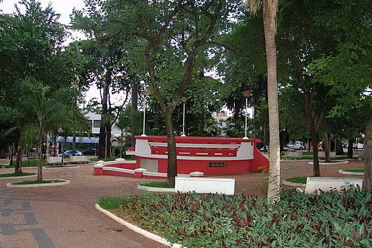

Em um dia qualquer, acordo em um lugar diferente no qual vejo uma criatura de dois dedos em uma das mãos, um dos dedos da mão destra com um anel ouro-cromático. A criatura me atacou com uma rapidez inimáginavel me segurando pelo pescoço e antes de eu "apagar" a ultima coisa que vi foi uma frase escrita no anel: "PERMISSÃO E PODER"
Você começa sua jornada na cidade de Agudos, e caminhando em uma avenida em direção a uma estrutura com alguns veículos de grande porte é visto uma senhora com uma pasta na mão e com uma escrita grande também escrito "PERMISSÃO E PODER"
Em um dia qualquer, acordo em um lugar diferente no qual vejo uma criatura de dois dedos em uma das mãos, um dos dedos da mão destra com um anel ouro-cromático. A criatura me atacou com uma rapidez inimáginavel me segurando pelo pescoço e antes de eu "apagar" a ultima coisa que vi foi uma frase escrita no anel: "PERMISSÃO E PODER" Além disso ele tinha uma tatuagem rasurada de uma letra J em seu braço direito.
Ela não quis relatar o que estava na pasta pois tem dados e acontecimentos extremamente comprometedor e com potencial perigo. O medo nos olhos dela estava bem evidente, mas indicou que pegasse um desses veículos que tinha apenas iniciais, as quais eram "B" e "L"
 Pedi uma carona para uma pessoa para a cidade de Bariri, minha casa, e lá ficarei po rum bom tempo, não quero mexer com o oculto, quero paz.
E descobri o que era o "B"... "Bauru"... E lá estava tudo desenho e tinha um grande cartaz escrito " o fim está próximo, mas pode ser evitado" E outro cartaz com a seguinte frase enigmatica: Em 90° encontrará o fim, em 180° Evitará o fim. Além disso, tinha outros dois veículos de grande porte, com as iniciais "J" e "L"
Um grande "Bem Vindo a Lençois" escrito em concreto na entrada da cidade e apesar disso, encontro a cidade também vazia, chego mais perto de uma estátua ao lado das boas vindas e encontro um anel e com a mesma escritura "PERMISSÃO E PODER" E uma frase minuscula abaixo: "Se chegou até aqui, está permitido" Há um veículo de grande porta no final da rua: "P"
Um grande "Bem Vindo a Lençois" escrito em concreto na entrada da cidade e apesar disso, encontro a cidade também vazia, chego mais perto de uma estátua ao lado das boas vindas e encontro um anel e com a mesma escritura "PERMISSÃO E PODER" E uma frase minuscula abaixo: "Se chegou até aqui, está permitido" Há um veículo de grande porta no final da rua: "P"
Em Pederneiras, tinha um grupo de militares especiais, me barraram, perguntando aonde eu vou. E respondi prontamente: Quero resolver o grande enigma. E eles me falaram que seria o meu fim e provavelmente da região, nigúem mais pode passar, era o ultimo aviso. E então mostrei a eles o anel. Ficaram sem reação.... mas avisaram que era por minha conta e risco, por isso não mudaram o destino de quem fosse passar: O fim.
O veículo me leva ao lago do meu sonho e tudo fica nevoa.... no qual vejo uma criatura de dois dedos em uma das mãos, um dos dedos da mão destra com um anel ouro-cromático. A criatura me atacou com uma rapidez inimáginavel me segurando pelo pescoço e antes de eu apagar a ultima coisa que vi foi uma frase escrita no anel: "PERMISSÃO E PODER"

O veículo me leva ao lago do meu sonho e tudo fica nevoa... Eu estou me vendo através de outra pessoa? Eu sou uma pessoa? Sinto uma raiva enorme e tenho vontade de matar aquela pessoa... só tenho dois dedos... tudo em volta é vermelho... sinto ódio e força.... AAAAAAAAAAAAAAAAHHHHHHHHHHHHHHHHHRRRRGGGGGGGGGGGGGGGGGGHHHHHHHHHHHHHHHHHH